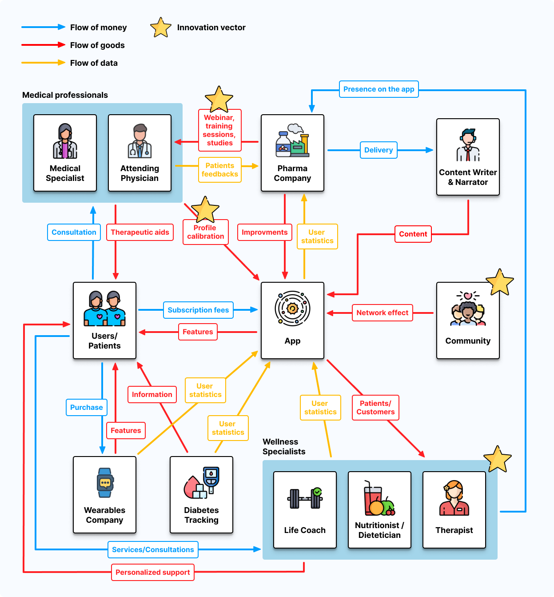
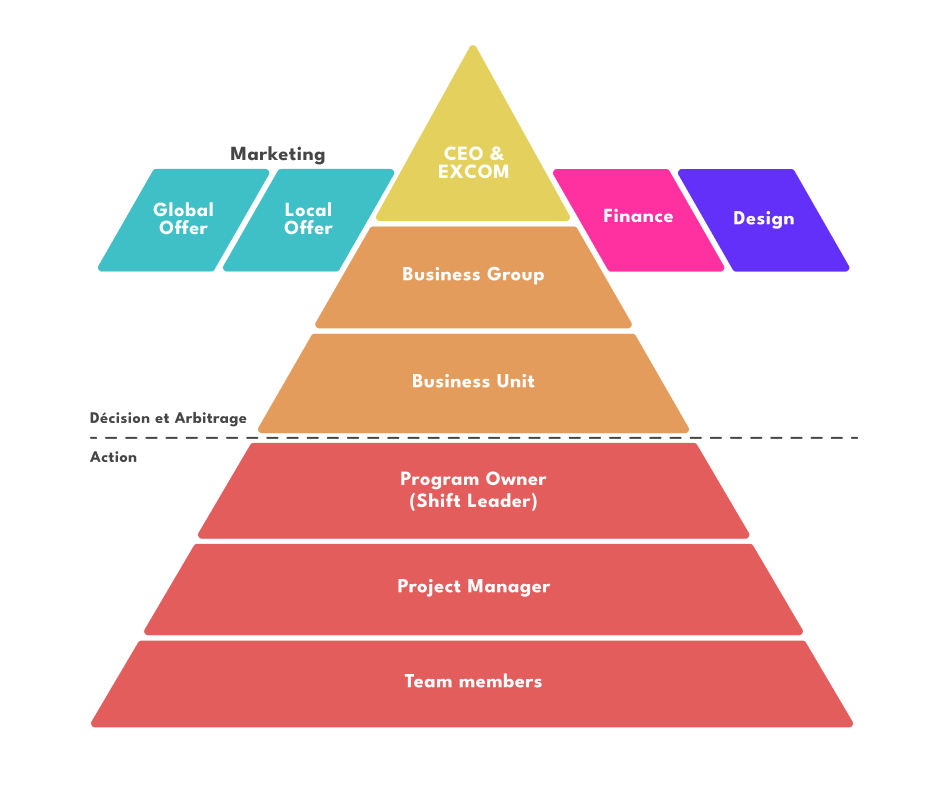
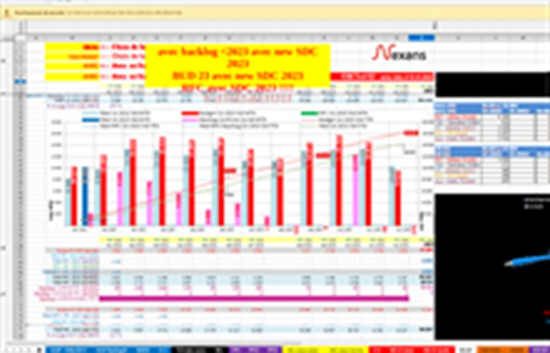
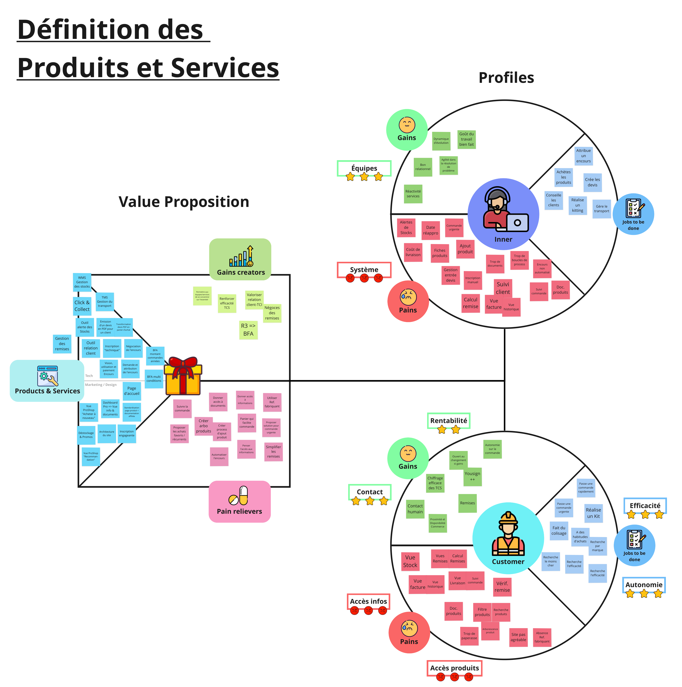
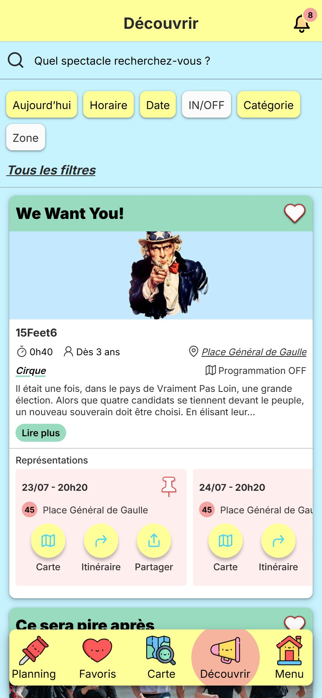

Cinq projets,
un même regard.
Derrière chaque demande initiale se cache la vraie complexité du terrain. Les études de cas retracent ces chemins, ces reconnexions : le point de départ, l'immersion, les dispositifs créés, ce qui a changé et ce que l'organisation et moi en gardons.
Et si la meilleure façon de soigner,
c'était de mieux relier ?
c'était de mieux relier ?
Un patient
tout ce qui l'entoure

Et si le plus grand désaccord était celui
que personne n'a jamais pu avoir ?
que personne n'a jamais pu avoir ?
Un comité exécutif
ses équipes, six étages plus bas

Et si le problème n'était pas les données,
mais ce qu'on cherchait à leur faire dire ?
mais ce qu'on cherchait à leur faire dire ?
Une donnée
la décision qu'elle doit éclairer

Et si le meilleur outil de vente
était celui qui ne remplace personne ?
était celui qui ne remplace personne ?
Un commercial
le client qu'il connaît par cœur

Et si l'application d'un festival
servait aussi ceux qui le jouent ?
servait aussi ceux qui le jouent ?
Un festivalier
le spectacle qu'il n'aurait pas trouvé
